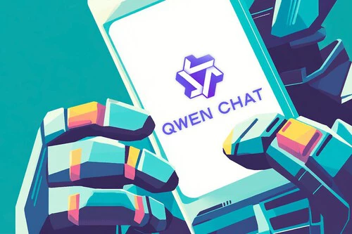

Descubre el poder del razonamiento avanzado
Qwen3 representa la nueva generación de modelos de lenguaje con capacidades de razonamiento híbrido, multilingüismo y comprensión contextual profunda. Diseñado para transformar la forma en que interactuamos con la inteligencia artificial.
